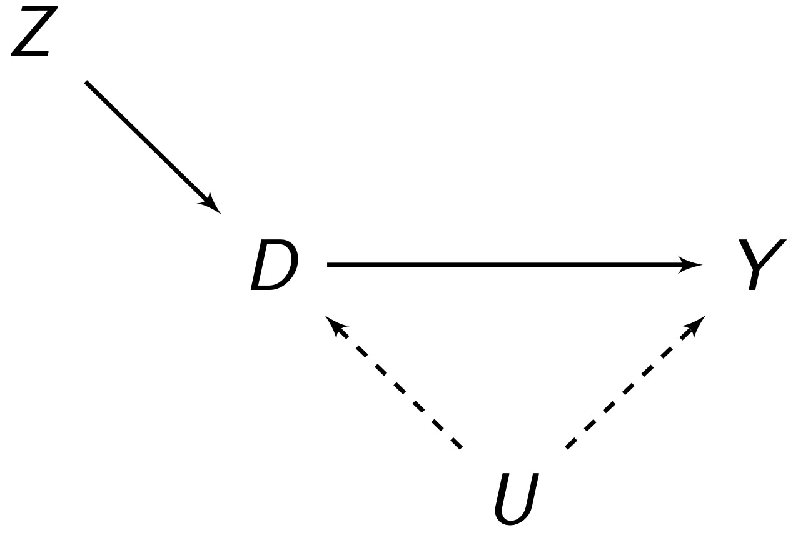
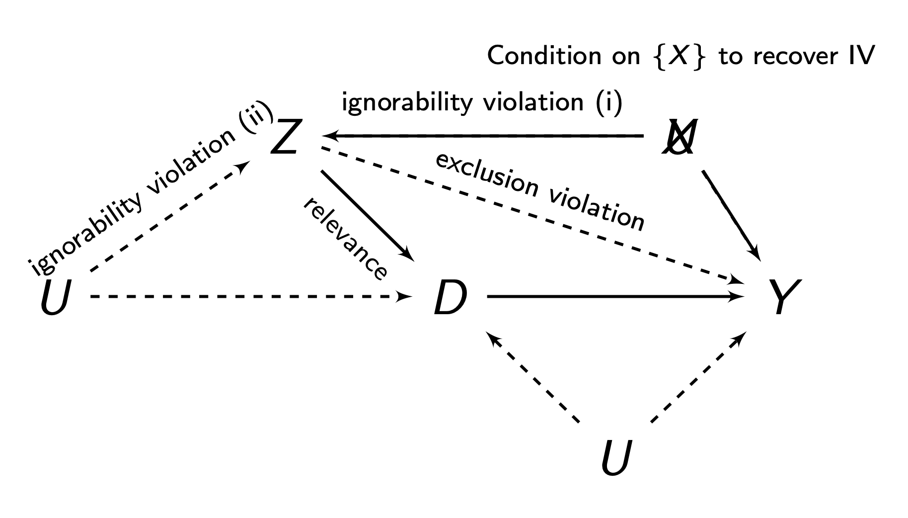

late <- fixest::feols(Y ~ 1 | D ~ Z, data = mydata, se = "hetero")Quasi-Experimental Methods
In the chapter 5, we introduced the frameworks of causal inference, and how randomisation can establish causality.
However, in the social sciences, we cannot always run randomised experiments where we control the assignment of treatment. In fact, in most scenarios, we have to rely on observational data. In this chapter, we introduce methods to identify causal effects when randomisation is not possible.
Overview
In chapter 5, we discussed how randomised experiments can establish causality. However, in the social sciences, randomised experiments where researchers control treatment assignment are not always possible to implement. Sometimes even with randomisation, something goes wrong, and we need another way to establish causality.
As a result, a series of quasi-experimental designs have been developed in order to estimate causal effects. These designs range in terms of credibility, and can generally only be implemented in certain scenarios where the real-world aligns with the specific design. The main designs, in order of credibility, are:
| Design | When to Use | Estimands |
|---|---|---|
| Non-Compliance Designs | When we have a randomised experiment, but some individuals do not comply with the treatment we assigned with them. | LATE, ITT |
| Regression Discontinuity | When treatment is assigned in the real-world by some cut-off value of some variable. | LATE |
| Examiner Instruments | When treatment assignment is influenced by the quasi-random assignment of individuals to decision makers (examiners), such as judges, doctors, caseworkers, etc. | LATE |
| Shift-Share Instruments | When treatment is assigned based on some exposure (share) to some exogenous/random shock (shift). | LATE |
| Differences-in-Differences | When there is variation in time of implementation of treatments between areas/units. | ATT |
| Selection on Observables | When treatment is believed to be assigned based on a set of variables (covariates) that we can observe. | ATE, ATT |
We will explore each of these designs in more details below.
Non-Compliance Designs
When we assign individuals to treatment/control in randomised experiments, we often cannot guarantee that individuals will actually follow through with treatment. Let us assume an encouragement \(Z_t \in \{0, 1\}\), which is our treatment assignment. Then, we have the treatment variable \(D_t \in \{0,1\}\), which is someone who actually took the treatment or not. Given this framework, we can divide all units \(i\) into 4 categories:
- Compliers: People who comply with encouragement \(Z_i\). Their \(Z_i = D_i\).
- Always-takers: People who no matter what encouragement \(Z_i\) is, always take treatment.
- Never-takers: People who no matter their encouragement \(Z_i\) is, never take treatment.
- Defiers: People who do the opposite of encouragement \(Z_i\), so always \(D_i ≠ Z_i\).
Principle Strata
We can visually show what will happen with all 4 types of people in a table, called the principal strata:
| \(Z_i = 1\) | \(Z_i = 0\) | |
| \(D_i = 1\) | Complier/Always-Taker | Defier/Always-Taker |
| \(D_i = 0\) | Defier/Never-Taker | Complier/Never-Taker |
The idea of the non-compliance designs is to use our encouragement/treatment assignment \(Z\) as an instrument for \(D\) - actually taking the treatment.
There are 4 assumptions to the non-compliance designs:
- Relevance: \(Z\) must be correlated to \(D\), i.e. \(Cov(Z,D)≠0\). Or in other words, compilers must exist, or else, encouragement \(Z\) would not affect treatment \(D\).
- Ignorability/Exogneity: There is no backdoor path between \(Z\) and \(D\), and no backdoor path between \(Z\) and \(Y\) (we can do controls/selection on observables to account for this). This is generally met if our \(Z\) in our non-compliance design is randomly assigned.
- Exclusions Restriction: \(Z\) must only have an effect on \(Y\) through \(D\). \(Z\) must not have any independent effect on \(Y\).
- Monotonicity: There are no defiers - people who do the opposite of their encouragement \(Z\), no matter what \(Z\) they get.
We have two estimands of interest. The Intent to Treat (ITT) is the ATE of \(Z\) on \(Y\). This is the effect of encouragement:
\[ \tau_{ITT} = \E(Y_t|Z_t = 1) - \E(Y_t | Z_t = 0) \]
However, the ITT does not tell us anything about the effect of \(D\) (the treatment), only \(Z\) (the encouragement). The Local Average Treamtment Effect (LATE) provides the effect of the treatment \(D\) on \(Y\) for compliers (so the ITT or ATE for compliers):
\[ \tau_{LATE} = \E(\tau_t | \mathrm{compliers}) \]
The LATE is generally not equivalent to the ATT or the ATE.
The ITT itself is identifiable under exogeneity/ignorability alone, since \(Z\) is randomly assigned in non-compliance designs.
To identify the LATE, we will need all 4 assumptions. Let us define \(c\) as compliers, \(a\) as always-takers, \(n\) as never-takers, and \(d\) as defiers. We can break down the ITT into a weighted average:
\[ \tau_{ITT} = \tau_{ITT}^c \P(c) + \tau_{ITT}^a \P(a) + \tau_{ITT}^n \P(n) + \tau_{ITT}^d \P(d) \]
We know that under our assumption of monotonicity, we assume no defiers, so the probability of a defier is \(\P(d) = 0\):
\[ \tau_{ITT} = \tau_{ITT}^c \P(c) + \tau_{ITT}^a \P(a) + \tau_{ITT}^n \P(n) \]
Our exclusions restriction says that \(Z\) has no independent effect on \(Y\). The ITT is the relationship between \(Z\) and \(Y\). But since always-takers and never-takers ignore \(Z\) when deciding treatment, \(Z\) has no effect of them on \(Y\). Thus, we can further simplify:
\[ \tau_{ITT} = \tau_{ITT}^c \P(c) \]
Remember that the \(\tau_{ITT}\) for compliers, \(\tau_{ITT}^c = \tau_{ATE}\). So, let us isolate it to get:
\[ \tau_{LATE} = \frac{\tau_{ITT}}{\P(c)} \ = \ \frac{\E(Y_i | Z_i = 1) - \E(Y_i | Z_i = 0)}{\E(D_i | Z_i = 1) - \E(D_i | Z_i = 0)} \]
For estimation, we could our sample equivalents in. Alternatively, we can use 2SLS (shown below), which produces equivalent estimates.
The typical \(Z\) setup in instrumental variables (and the non-compliance design) is:

Since we use only the compliers (the part of \(D\) that is explained by \(Z\)) for the LATE, \(Z\) determines \(D\), and not \(U\). Thus, we have broken the link \(U \rightarrow D\), thus eliminating our confounder problem. The weaknesses of the design are the numerous possible violations:

In a non-compliance design, since \(Z\) is randomly assigned, ignorability is generally not a huge concern. Relevance is generally met assuming we have compliers. Our main concern is the exclusions restriction.
To estimate the LATE in a non-compliance design, we typically use the 2-stage least squares estimator, as was detailed previously.
The 2SLS estimator (and IV estimator) are biased in small sample sizes, but asymptotically consistent, so we should be more careful when dealing with small samples.
When interpreting the LATE, we must be careful. The LATE is only the causal effect of taking the treatment for compliers. However, we cannot say anything about non-compliers, and we must be careful about generalising. We generally do not know who the compliers are as well, and different \(Z\) can result in different compliers.
Examiner Designs
Examiner designs are used in settings where individuals \(t\) are assigned to evaluators/examiners, who have some discretion in assigning treatment.
The classic example is judges and sentencing. We want to study the effect of incarceration on an outcome. Individuals prosecuted of a crime are first randomly assigned to courtrooms, and those courtrooms decide if these individuals will be incarcerated. However, courtrooms differ in the propensity for defendants to be incracerated. Other common set-ups include asylum decisions assigned to officers, healthcare diagnoses assigned to doctors, and so on.
More generally, we have \(n\) units, and \(K\) examiners \(1, \dots, K\) who have control over treatment status \(D_t\). Each unit \(t\) is assigned to an examiner \(k\) in a known way. The examiner \(k\) unit \(t\) is assigned to is stored in a categorical variable \(Q_t = k\).
Our assumptions for the examiner design are as follows:
- Relevance: Each examiner \(k\) should have a different propensity to assign treatment \(D\).
- Exogeneity/Ignorability: Assignment to examiners should be as-if random. There should be no backdoor paths between assignment to examiner and \(Y\).
- Exclusions Restriction: No direct relationship between assignment to examiner and \(Y\), that is not through \(D\). Exclusions restrictions can actually be allowed, as long as they occur randomly.
- Monotonicity: Examiner behaviour must be ordered. This means that if examiner \(k\) has a property, they should apply it to all subjects \(t\). For example, if \(k\) is more likely in assigning \(D\), it must be more likely for every unit \(t\) (this is an issue if an examiner has racial or gender biases for example).
If these assumptions are met, we can use two estimation methods for our instrument - which is the propensity of an examiner \(k\) assigning a treatment \(D_t = 1\).
The propensity of an examiner assigning treatment is also a time-invariant property - it does not change over time. Thus, we can use fixed effects for examiners to control for these propensities.
Thus, our instruments will be dummy variables \(Z_1, \dots, Z_{K-1}\) (The \(k-1\) is because we have to leave one category out). Any specific \(Z_k\) takes a value \(Z_{tk} = 1\) if unit \(t\) was assigned to that specific examiner \(k\), and \(Z_{tk} = 0\) if unit \(t\) was not assigned to that specific examiner \(k\).
These dummy instruments will be included in the first stage to estimate \(\hat D_t\), then in the second stage, use \(\hat D_t\) as an explanatory variable for \(Y_t\).
In R, the implementation is as follows:
fixest::feols(Y ~ 1 | D ~ as.factor(Z),
data = my_data, se = "hetero")We want to use the fact that different examiners are different - that is, variation in treatment assignment propensity to examiners. Thus, we need to estimate the latent (unobserved) propensity of each examiner \(k\).
We do this by finding the probability of being assigned to treatment \(D_t = 1\) for examiner \(k\), but ignoring unit \(t\) themselves:
\[ \hat L_t^{(k)} = \frac{\overbrace{\sum_{j≠t} \mathbb I[Q_j = Q_t]D_j}^{\text{num of treated for examiner k }}}{\underbrace{\sum_{j≠t} \mathbb I[Q_j = Q_t]}_{\text{total num assigned to examiner k}}} \]
Where \(\mathbb I[Q_j = Q_t]\) is an indicator function that only takes the value of 1 if the examiner of unit \(j\) is the same as the examiner of unit \(t\). We leave \(t\) out in the sum because you do not want to use \(D\) to measure the instrument, to avoid ignorability violations. We can estimate this in R:
my_data$L <- ave(my_data$D, my_data$Q, FUN = mean)Where D is the treatment variable, and Q is the assigned examiner variable.
We then use \(\hat L_t^{(k)}\) as an instrument for \(D_t\), and use a instrumental variables/2-stage-least-squares estimator.
fixest::feols(Y ~ 1 | D ~ L, data = my_data, se = "hetero")Differences-in-Differences
Selection on Observables
There are two assumptions for selection on observables:
Conditional Ignorability (also called conditional independence) means that among units \(i\) with identical confounder values \(\mathcal X_i\), treatment \(D_i\) is as-if randomly assigned. Potential outcomes are independent from treatment within each specific confounder value \(\mathcal X_i = x\).
\[ (\pc, \pt) \ind D_t \ | \ \set X_t = x, \ \forall \ x \in \set X \]
This assumption implies that given any value of confounders \(\set X_t = x\), potential outcomes are equivalent between treatment and control groups:
\[ \begin{align} & \E(\pc|D_t = 1, \set X_t = x) \ = \ \E(\pc|D_t = 0, \set X_t = x) \ = \ \E(\pc|\set X_t = x) \\ & \E(\pt|D_t = 1, \set X_t = x) \ = \ \E(\pt|D_t = 0, \set X_t = x) \ = \ \E(\pt|\set X_t = x) \end{align} \tag{12.1}\]
Common Support is the second assumption, and it states for any unit \(t\) with any value of \(\mathcal X_t\), they have a non-zero probability they can be assigned to both control and treatment.
A few tips for selection controls in set \(\set X\):
- Good controls are confounders \(X\) who cause \(D\) (i.e. \(X \rightarrow D\)), and are associated with \(Y\). We want to control for all of these.
- Bad controls include any variable that is caused by \(D\), i.e. \(D \rightarrow W\). We do not need to control for this because \(W\) isn’t causing selection into \(D\), it is actually itself caused by \(D\). Another bad control is a variable \(Z\) that only causes \(D\), and not \(Y\). This reduces the variation in \(D\), which may amplify any other confounders unaccounted for.
- Neutral controls are variables that only cause \(Y\) and are not associated with \(D\). They do not affect the causal identification, but can reduce our standard errors.
Using these assumptions, we can first identify the CATE, which will allow us to identify the ATE. Let us first start with the definition of CATE (definition 5.6):
\[ \begin{align} \tau_{CATE}(x) & = \E(\pt - \pc \ | \ \set X_t = x) \\ & = \E(\pt | \set X_t = x) - \E(\pc|\set X_t = x) \\ \end{align} \]
Now, from the properties implied by conditional ignorability given in eq. 12.1, we get
\[ \begin{align} \tau_{CATE}(x) & = \E(\pt|D_i = 1, \set X_t = x) - \E(\pc|D_i = 0, \set X_t = x) \\ & = \E(Y_{t}|D_t = 1, \mathcal X_t = x) - \E(Y_{t}|D_t = 0, \set X_t = x) \\ \end{align} \]
And the second step above is because \(\pt|D_i = 1\) and \(\pc|D_i = 0\) are observable outcomes (definition 5.7). Thus, with independence, we can identify the CATE with just observed outcomes.
Let us consider the definition of the ATE, which is \(\E(\pt - \pc)\). From the definition of expectation given in definition 1.2, we can rewrite the ATE as
\[ \tau_{ATE} = \int\tau_{CATE}(x) \P(\mathcal x) dy \]
Which is a weighted average. We established above that we can identify the CATE. Thus, we can plug the CATE into the ATE to get our identified ATE:
\[ \tau_{ATE} = \int [\E(Y_{t}|D_t = 1, \set X_t = x) - \E(Y_{t}|D_t = 0, \set X_t = x)] \P(x) dy \]
And all the values in this equation are observed outcomes \(Y_t\), meaning if we control for set of confounders \(\mathcal X\), our correlation becomes a causal effect.
Using these assumptions, we can first identify the CATE, which will allow us to identify the ATT. Let us first start with the definition of CATE (definition 5.6):
\[ \begin{align} \tau_{CATE}(x) & = \E(\pt - \pc \ | \ \set X_t = x) \\ & = \E(\pt | \set X_t = x) - \E(\pc|\set X_t = x) \\ \end{align} \]
Now, from the properties implied by conditional ignorability given in eq. 12.1, we get
\[ \begin{align} \tau_{CATE}(x) & = \E(\pt|D_i = 1, \set X_t = x) - \E(\pc|D_i = 0, \set X_t = x) \\ & = \E(Y_{t}|D_t = 1, \mathcal X_t = x) - \E(Y_{t}|D_t = 0, \set X_t = x) \\ \end{align} \]
And the second step above is because \(\pt|D_i = 1\) and \(\pc|D_i = 0\) are observable outcomes (definition 5.7). Thus, with independence, we can identify the CATE with just observed outcomes.
Let us consider the definition of the ATT, which is \(\E(\pc = \pt | D_i = 1)\). From the definition expectation given in definition 1.2, we can rewrite the ATT as
\[ \tau_{ATT} = \int \tau_{CATE}(x) \P(x|D_t = 1) dy \]
Which is a weighted average. We established above that we can identify the CATE. Thus, we can plug CATE into the ATE to get our identified ATT:
\[ \tau_{ATT} = \int [\E(Y_{t}|D_t = 1, \set X_t = x) - \E(Y_{t}|D_t = 0, \mathcal X_t = x)] \P(x|D_t = 1) dy \]
And all the values in this equation are observed outcomes \(Y_t\), meaning if we control for set of confounders \(\mathcal X\), our correlation becomes a causal effect.
Assuming we meet the assumptions, there are multiple estimators, including regression, matching, propensity score matching, and weighting.
Regression is the most popular estimator for selection on observables. There are two types of regression estimators.
Classical linear regression with OLS and robust standard errors is used to estimate the ATE when we believe we have constant treatment effects for all units (where each unit \(t\) has the same \(\tau\) effect):
\[ \textcolor{purple}{Y_t^{(d)}} = \alpha + D_t\tau + \b x_t \b\gamma + \eps_t \]
ate <- fixest::feols(Y ~ D + X1 + X2 + X3,
data = mydata, se = "hetero")
summary(ate)However, classical linear regression is biased for the ATE if we have heterogenous treatment effects (different units have different \(\tau\)). It actually is an unbiased estimator for a weighted average of the ATT and ATU, not the ATE.
Instead, with heterogeneity, we should use the Fully Interacted Estimator:
\[ \textcolor{purple}{Y_t^{(d)}} = \alpha + D_t \tau + (\b x_t - \bar{\b x})\b\beta + D_t(\b x_t - \bar{\b x})\b\gamma + \eps_t \]
ate <- estimatr::lm_lin(Y ~ D, covariates = ~ X1 + X2 + X3,
data = my_data)
summary(ate)The fully interacted estimator is slightly biased when estimating \(\tau_{ATE}\), but the bias is arbitrarily small in large sample sizes. When we have a good amount of data, we tend to default to this estimator.
Matching estimates missing potential outcomes/counterfactuals for each observation in the treated group, by matching an untreated observation to that treated observation. The matching process is done by similarity on covariates \(\set X\). Matching estimates the ATT:
\[ \hat\tau_{ATT} = \frac{1}{N_1} \sum\limits_{t:D_i = 1}^{N_1}(Y_t - \tilde Y_t) \]
Where \(N_1\) is the number of observations of units in the treatment group, \(Y_i\) is the observed \(Y\) of unit \(t\) in the treated group, and \(\tilde Y_i\) is the observed \(Y\) value of the control unit matched to unit \(t\). Matching takes an average difference of the matched pairs.
We can also match multiple control units \(\tilde Y_t\) to one treated unit \(t\), and average the value of those control units to create a closer match with the treated unit \(t\).
To determine what units are “closest” to each other in similarity of covariates \(\set X\) for matching, the typical choice is mahalanobis distance, which calculates the distance between a unit \(i\) and \(j\):
\[ D_M(i,j) = \sqrt{(\b x_i - \b x_j)^\top \b\Sigma_x^{-1}(\b x_i - \b x_j)} \]
Where \(\b\Sigma_x\) is the covariance matrix of confounders \(\set X\). The units in treatment and control that have the smallest distances are matched. Matching is done in R:
#matching units
match_obj <- MatchIt::matchit(D ~ X1 + X2 + X3, data = my_data,
method = "nearest", distance = "mahalanobis")
match_data <- MatchIt::match.data(match_obj, weights = "nn_weights")
#estimate
att <- estimatr::lm_robust(Y ~ D, data = match_data, weights = nn_weights)
summary(att)The matching estimator is prone to bias/poor-matches as the number of covariates you have increases. Generally, with many covaraites, propensity scores are more popular.
Propensity score matching is similar to matching, and also estimates the ATT.
However, instead of matching on covariates, it matches on the likelihood of a unit \(t\) receiving treatment \(D_t = 1\), based on their covariate \(\set X_t\) values. This likelihood/probability is called the propensity score.
\[ \pr_t(\set X_t) = \P(D_t = 1 | \set X_t) \]
However, we do not actually observe \(\pr_t(\set X_t)\). We can estimate \(\pr_t(\set X_t)\) with a binary response model with outcome \(D_t\), and explanatory variables \(\set X\). Then using the fitted probabilities \(\P(D_t = 1) = \hat\pr_t(\set X_t)\), we can conduct matching based on these estimates.
To implement propensity score matching in R, we start with our binary response variable. The most common choice is logistic regression, but random forest is also possible:
# logistic model
ps_model <- glm(D ~ X1 + X2, data = my_data, family = "binomial")
# rf model
ps_model <- randomForest::randomForest(D ~ X1 + X2,
data = my_data,
na.action = na.omit)
# estimate propensity scores
my_data$ps <- predict(ps_model, type = "response")Then, we conduct matching with the estimated propensity scores:
#matching units
match_obj <- MatchIt::matchit(D ~ ps, data = my_data,
method = "nearest", distance = "mahalanobis")
match_data <- MatchIt::match.data(match_obj, weights = "pscore_weights")
#estimate
att <- estimatr::lm_robust(Y ~ D, data = match_data,
weights = pscore_weights)
summary(att)Matching only recovers the ATT. However, if we want the ATE, we can use propensity scores in a inverse probability weighting (IPW) estimator. It can be shown with math that the ATE with propensity scores \(\pr_t(\set X_t)\) can be identified as:
\[ \tau_{ATE} = \E\left[ Y_t \cdot \frac{D_t - \pr_t(\set X_t)}{\pr_t(\set X_t)(1-\pr_t(\set X_t))} \right] \]
We can use our sample equivalents to estimate the ATE:
\[ \begin{align} \hat\tau_{ATE} & = \frac{1}{N}\sum\limits_{i=1}^N\left(Y_t \cdot \frac{D_t - \hat\pr_t(\set X_t)}{\hat\pr_t(\set X_t)(1-\hat\pr_t(\set X_t))} \right) \\ & = \frac{1}{N} \sum\limits_{i=1}^N\left( Y_tD_t\frac{1}{\hat\pr_t(\set X_t)} - Y_t(1-D_t)\frac{1}{1 - \hat\pr_t(\set X_t)}\right) \end{align} \]
We see that units who are unlikely to recieve treatment (low propensity scores) that actually get treated get weighted more, and units who are likely to be treated (high propensity scores) but don’t get treated also get weighted more.
We first estimate the propensity scores with either logistic or random forest:
# logistic model
ps_model <- glm(D ~ X1 + X2, data = my_data, family = "binomial")
# rf model
ps_model <- randomForest::randomForest(D ~ X1 + X2,
data = my_data,
na.action = na.omit)
# estimate propensity scores
my_data$ps <- predict(ps_model, type = "response")Then, we calculate the weights and estimate:
my_data$ipw <- ifelse(mydata$D == 1, 1/my_data$ps, 1/(1-my_data$ps))
ate <- estimatr::lm_robust(Y~D, data = my_data, weights = ipw)The IPW estimator is asymptotically consistent, but has poor small sample properties, and are sensitive to extreme values of \(\hat\pr_t(\set X_t)\).
We should generally be careful with selection on observables, as it is considered to be the least robust of the quasi-experimental designs. This is particularly the case in the social sciences, when there are tons and tons of unobservable confounders which are nearly impossible to control for.